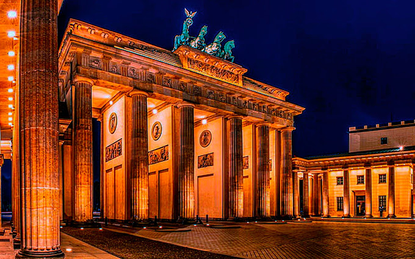
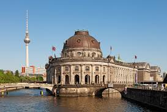

Introdução
Berlim, a capital vibrante da Alemanha, é uma cidade que mescla história, cultura e modernidade de maneira única. Conhecida por seu passado marcante, incluindo a queda do Muro de Berlim, a cidade oferece uma rica tapeçaria de monumentos históricos, museus de renome mundial e uma cena artística dinâmica. Com suas ruas repletas de histórias, parques tranquilos e uma vida noturna pulsante, Berlim é um destino inesquecível para viajantes que buscam tanto reflexão quanto diversão. Venha descobrir o que torna Berlim uma das cidades mais fascinantes e inovadoras da Europa!
Iremos ver as seguintes atrações:
- Portão de Brandemburgo
- Muro de Berlim e Memorial do Muro
- Ilha dos Museus
Portão de Brandemburgo
O Portão de Brandemburgo é sem dúvida um dos marcos mais emblemáticos de Berlim, e também da Alemanha, e uma parada obrigatória para qualquer visitante. Situado no centro da cidade, esse impressionante portão neoclássico foi construído entre 1788 e 1791, por Carl Gotthard Langhans, como um símbolo da paz e da prosperidade de Berlim, no auge do reinado de Frederico Guilherme II. Seu design, com suas imponentes colunas e a famosa quadriga, uma carruagem puxada por quatro cavalos, representa a deusa da vitória, o que lhe conferiu um caráter monumental desde sua inauguração. Durante a Guerra Fria, o Portão de Brandemburgo tornou-se um símbolo da divisão da Alemanha, pois ficava diretamente na linha de separação entre Berlim Ocidental e Oriental, sendo cercado pelo Muro de Berlim.
Após a queda do Muro de Berlim em 1989, o portão passou a representar não apenas a reunificação da Alemanha, mas também a superação de um dos maiores símbolos da divisão da Guerra Fria. Hoje, o Portão de Brandemburgo se tornou um dos principais pontos turísticos da cidade, sendo considerado um local de encontro para moradores e turistas. À noite, o portão é iluminado, criando uma vista deslumbrante, e é um ótimo lugar para passeios tranquilos e para admirar a grandiosidade da arquitetura. Nos arredores, há praças e parques que tornam o ambiente ainda mais agradável, convidando os visitantes a refletirem sobre o significado histórico e cultural do local.
Mais informaçõesMuro de Berlim e Memorial do Muro

Muro de Berlim foi um dos maiores símbolos da Guerra Fria e, ao longo de quase 30 anos, separou fisicamente a cidade em Berlim Ocidental e Berlim Oriental, dividindo não apenas a Alemanha, mas o mundo em dois blocos ideológicos distintos. O Memorial do Muro de Berlim oferece uma oportunidade única para os turistas entenderem profundamente o impacto desse muro na vida das pessoas, e como ele afetou a história e a política mundial. Ao longo do Memorial, várias partes do muro ainda estão preservadas, com painéis informativos e fotografias que narram a história da divisão e dos esforços para atravessá-lo, além de várias histórias de fugas dramáticas e tentativas de escape, que mostram o desespero de quem buscava liberdade.
O Memorial do Muro é um espaço de reflexão, onde os visitantes podem ver as torres de vigia, a "faixa da morte" (a zona desmilitarizada ao redor do muro) e entender melhor o impacto psicológico e político que essa divisão teve sobre as famílias e a sociedade alemã. Uma das áreas mais marcantes para se visitar é o "East Side Gallery", um trecho do muro que foi preservado e transformado em uma galeria de arte ao ar livre. Nessa galeria, mais de 100 artistas de todo o mundo pintaram murais que retratam temas como liberdade, paz, e a luta contra regimes autoritários. Entre as obras mais conhecidas estão imagens do famoso beijo entre o líder soviético Leonid Brezhnev e o presidente da Alemanha Oriental, Erich Honecker, que simboliza a cordialidade entre as duas nações divididas. Ao explorar essas áreas, os visitantes podem sentir a emoção da história e refletir sobre o impacto dessa divisão.
Mais informaçõesIlha dos Museus
A Ilha dos Museus (Museumsinsel), situada no rio Spree, no centro de Berlim, é um dos maiores e mais importantes complexos museológicos do mundo, sendo Patrimônio Mundial da Humanidade pela UNESCO. Com uma vasta coleção de arte e artefatos históricos, a ilha abriga cinco dos museus mais importantes da cidade. O mais famoso deles é o Museu Pergamon, um dos maiores museus de arqueologia do mundo, conhecido por suas impressionantes reconstruções de monumentos antigos, como o Altar de Pérgamo e a Porta de Ishtar, que impressionam pela escala e detalhamento. As coleções do museu também incluem artefatos de antigas civilizações como a Mesopotâmia, o Egito e a Grécia Antiga, tornando-o um local fascinante para os interessados em história e arqueologia.
Além do Museu Pergamon, a Ilha dos Museus conta com o Altes Museum, que abriga uma vasta coleção de arte clássica, incluindo esculturas gregas e romanas. O Museu de História Alemã é uma excelente escolha para quem deseja entender a evolução da Alemanha, com exposições que abrangem desde os tempos medievais até os eventos mais recentes da história do país. Já o Museu Bode, com sua coleção de esculturas e arte bizantina, e o Museu de Arte Islâmica, com seus tesouros do mundo islâmico, completam esse incrível circuito cultural. Cada museu oferece uma experiência única, rica em história e arte, proporcionando aos visitantes uma imersão nas culturas que moldaram o mundo moderno.
A Ilha dos Museus é um destino imperdível para qualquer amante de arte e história, oferecendo uma visão abrangente e fascinante da humanidade ao longo dos séculos. Com sua arquitetura histórica e coleções excepcionais, o local proporciona uma viagem no tempo, permitindo que os visitantes apreciem não apenas as obras de arte, mas também o contexto histórico e cultural que elas representam. Para quem deseja explorar as raízes da civilização e se maravilhar com a beleza da arte antiga, a Ilha dos Museus é o lugar ideal.
Mais informações